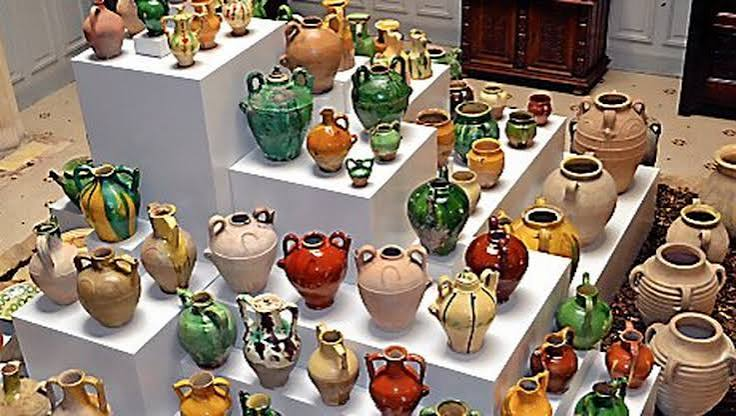

L'histoire artisanale de Pézenas est inséparable de sa situation au cœur de la vallée de l'Hérault, sur de très anciens axes d'échanges entre le littoral méditerranéen, les reliefs du Massif central, le Rhône et l'ouest languedocien. Le territoire est occupé depuis l'Antiquité et participe très tôt aux échanges méditerranéens. Mais c'est surtout au Moyen Âge que Pézenas acquiert le caractère de ville marchande qui favorisera durablement l'installation d'artisans, de fabricants et de créateurs.
Rattachée au domaine royal au XIIIe siècle, la cité reçoit de nouveaux privilèges commerciaux : après l'acquisition de Pézenas par Saint Louis en 1262, une foire royale est accordée en 1272. Associées à celles de Montagnac, les foires de Pézenas forment bientôt un cycle commercial majeur du Midi, parfois comparé, à l'échelle méridionale, aux grandes foires de Champagne. Marchands du Languedoc, de Provence, du Dauphiné, de Savoie, du Piémont et d'Italie y échangent draps, épices, mercerie, métaux, objets manufacturés, monnaies et produits agricoles. Cet afflux de négociants nourrit tout un monde d'ateliers : métiers du textile, du cuir, du bois, du métal et, naturellement, métiers de la terre et du feu.

Céramique Pézenas
Aux XVe et XVIe siècles, malgré les crises de la fin du Moyen Âge, les foires conservent une importance considérable. Jacques Cœur, grand argentier de Charles VII et figure majeure du commerce français, s'intéresse lui-même à leur potentiel économique. Pézenas devient ainsi un lieu où se rencontrent matières premières, techniques et influences venues de plusieurs régions. Cette culture marchande explique en partie la permanence d'une population d'artisans au cœur même de la ville.
La destinée de Pézenas change encore d'échelle aux XVIe et XVIIe siècles lorsqu'elle devient un lieu politique majeur du Languedoc. Les États de Languedoc y tiennent régulièrement leurs sessions et les gouverneurs de la province y résident. Sous les Montmorency, puis sous les princes de Conti, la ville accueille nobles, magistrats, officiers, domestiques et hommes de culture. Cette clientèle fortunée stimule les métiers du bâtiment et du décor : tailleurs de pierre, menuisiers, ferronniers, peintres, sculpteurs, orfèvres et artisans spécialisés travaillent à l'aménagement des hôtels particuliers dont les cours, escaliers, portes et ferronneries constituent encore aujourd'hui l'un des grands attraits du secteur sauvegardé.
Le séjour de Molière et de sa troupe dans les années 1650 contribue ensuite à l'identité culturelle de la cité. Même si cette histoire appartient d'abord au théâtre, elle renforce au fil du temps l'image d'une ville vouée aux arts, au spectacle et à la création. Le patrimoine architectural, les traditions festives et la mémoire de Molière formeront, plusieurs siècles plus tard, un environnement particulièrement favorable au renouveau des métiers d'art.
La céramique de Pézenas doit être replacée dans le vaste monde des poteries languedociennes. Dans tout l'Hérault, l'argile est transformée depuis des siècles en vaisselle, pots de conservation, cruches, jarres, tuiles, carreaux, éléments de construction et récipients spécialisés. Les centres potiers voisins — notamment Saint-Jean-de-Fos — témoignent de l'ancienneté et de la vitalité de cette civilisation de la terre cuite. Les ateliers piscénois ont ainsi évolué au contact d'un territoire où poterie commune, terre vernissée, faïence et céramique décorative occupaient des fonctions aussi bien domestiques qu'architecturales.
À l'époque moderne, la faïence prend une place croissante dans les usages urbains. Les demeures aisées, les tables bourgeoises, les communautés religieuses et les apothicaireries utilisent plats, assiettes, pots, chevrettes et autres récipients en céramique. Cette production associe l'utilité à la recherche décorative : engobes, glaçures et émaux permettent de protéger les pièces tout en leur donnant couleurs et motifs. Pézenas n'est pas un centre industriel comparable aux grandes manufactures françaises de faïence, mais elle appartient pleinement à cet espace languedocien où circulent objets, artisans et techniques.
À partir du XIXe siècle, l'industrialisation et la diffusion de nouveaux matériaux bouleversent les métiers traditionnels. Les objets fabriqués en série concurrencent la production artisanale, tandis que les anciennes fonctions commerciales de Pézenas s'atténuent. Pourtant, le tissu ancien de la ville conserve ses boutiques, ses rez-de-chaussée d'échoppes et ses ateliers. Ce patrimoine urbain devient au XXe siècle l'un des supports de la renaissance artisanale.
La sauvegarde et la restauration progressive du centre historique favorisent en effet le retour de créateurs dans les rues anciennes. Potiers et céramistes côtoient ferronniers, verriers, ébénistes, tourneurs sur bois, mosaïstes, bijoutiers, maroquiniers et créateurs textiles. Les anciennes boutiques retrouvent une fonction de production et de vente directe : le visiteur peut voir l'objet dans son lieu de création et rencontrer celui ou celle qui l'a façonné. Cette continuité entre patrimoine bâti et création contemporaine est devenue l'une des signatures de Pézenas.
La reconnaissance de Pézenas comme « Ville et Métiers d'Art » consacre cette orientation. Aujourd'hui, plus de quarante artisans d'art et créateurs sont présents dans le cœur historique, avec une grande diversité de disciplines parmi lesquelles la poterie, la faïence, les émaux, la mosaïque et le verre. La céramique y prend des formes multiples : pièces tournées, modelées ou sculptées, grès, porcelaine, faïence, terres engobées ou émaillées, objets utilitaires et œuvres purement décoratives.
Un jalon important de cette politique est l'ouverture, au début des années 2010, de la Maison des Métiers d'Art dans l'ancienne maison consulaire de la place Gambetta, édifice du XVIIe siècle protégé au titre des Monuments historiques. Porté avec Ateliers d'Art de France, la Ville et l'intercommunalité, ce lieu met en relation le patrimoine de Pézenas et la création actuelle. Il présente chaque année le travail de nombreux artisans français et contribue à faire de la cité une vitrine nationale des métiers de la matière. En 2026, la Maison rejoint l'identité EMPREINTES du réseau d'Ateliers d'Art de France, prolongeant cette mission de diffusion des métiers d'art.
Ainsi, parler des ateliers de céramique de Pézenas ne revient pas à évoquer une seule école ou une production uniforme. Leur identité vient plutôt d'une histoire urbaine faite d'échanges commerciaux, de commandes aristocratiques, de savoir-faire artisanaux, de sauvegarde patrimoniale et de création contemporaine. La terre et le feu y côtoient aujourd'hui le verre, le métal, le bois et le textile, dans une ville qui a transformé son héritage de cité de foires en véritable quartier vivant des métiers d'art.
Si Jean-Baptiste Poquelin est né à Paris, Molière est né à Pézenas.
— Marcel Pagnol
🥾
Visite pratique
⏱️
Durée
1h30 à 2h30 selon le nombre d'ateliers visités
📊
Difficulté
Facile · déambulation en centre-ville piéton
🚗
Accès
6, place Gambetta, 34120 Pézenas
🎟️
Tarif
Déambulation et boutique en accès libre et gratuit
✦ Infos pratiques
Maison des Métiers d'Art Ouverte du mardi au samedi, 10h-18h
Horaires d'été Lundi-samedi 10h-20h et dimanche 14h-20h (juillet-août)
Téléphone 04 67 98 11 12
Ateliers individuels Horaires propres à chaque artisan, se renseigner sur place
Nombre d'artisans Une quarantaine installés à l'année dans le centre historique
Stationnement Parkings en périphérie du centre-ville piéton
1
La Maison des Métiers d'Art
Installée place Gambetta dans l'ancienne Maison Consulaire, cette boutique-vitrine gérée par Ateliers d'Art de France présente céramique, verre, bois et textile de créateurs français.
2
Le quartier des artisans
Déambulation dans les ruelles pavées et cours secrètes où céramistes et potiers ouvrent leurs ateliers au public.
3
Les hôtels particuliers
Façades du XVIIe siècle, cours intérieures et escaliers à vis rappellent l'âge d'or de la ville sous les Conti.
4
Les ateliers-boutiques
Nombreux céramistes proposent la vente directe de leurs créations, parfois accompagnée de démonstrations de tournage.
🏆
Reconnaissance & patrimoine
🎖️
Label « Ville et Métiers d'Art »
Distinction nationale récompensant la densité et la vitalité du tissu d'artisans d'art installés à l'année dans le centre historique.
Ville et Métiers d'Art
🏛️
Maison des Métiers d'Art
Installée depuis 2012 dans l'ancienne Maison Consulaire, monument historique, en partenariat avec Ateliers d'Art de France.
Depuis 2012
🌿
Grand Site Occitanie
Distinction régionale valorisant la qualité patrimoniale et paysagère du centre historique de Pézenas.
Grand Site Occitanie
🏺
Artisans & céramistes
Une quarantaine d'artisans d'art vivent et créent à l'année dans le centre historique de Pézenas, aux côtés de la céramique : ferronniers, doreurs sur bois, mosaïstes, ébénistes, verriers, bijoutiers ou encore accessoiristes de théâtre. Les céramistes y travaillent des techniques variées — poterie en grès, faïence, émaux peints — allant de pièces utilitaires aux créations les plus contemporaines.
Une véritable pépinière de créativité, où se conjuguent renaissance d'un centre historique ancien et métiers d'art.
— Ville de Pézenas
La Maison des Métiers d'Art, gérée par le syndicat national Ateliers d'Art de France, fédère à l'échelle nationale plus de 6 000 artisans d'art et présente dans sa boutique piscénoise les créations de 150 d'entre eux. Elle accueille chaque année plus de 25 000 visiteurs et organise, de mars à décembre, des visites guidées dans les ateliers voisins pour prolonger la découverte des savoir-faire locaux.
📍
Aux alentours
Manufacture Royale de Villeneuvette à une vingtaine de minutes, ce village-manufacture textile du XVIIe siècle est aujourd'hui lui aussi habité par des artistes et artisans d'art.
Étang de Thau à une trentaine de minutes, ses villages ostréicoles et ses ateliers de céramique en bord d'eau offrent un autre visage de l'artisanat héraultais.
Béziers à une vingtaine de minutes, la cité viticole conserve sa cathédrale Saint-Nazaire perchée et les célèbres écluses de Fonséranes sur le canal du Midi.
Lodève à trois quarts d'heure, la Manufacture nationale de la Savonnerie complète la découverte des savoir-faire textiles et artisanaux du département.